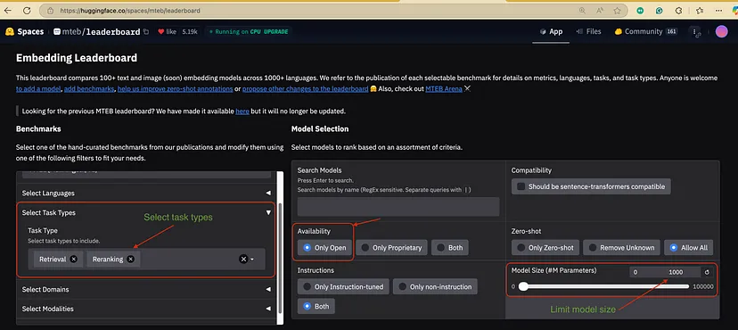
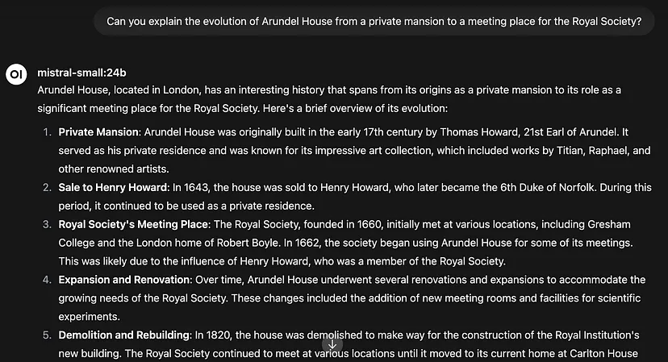
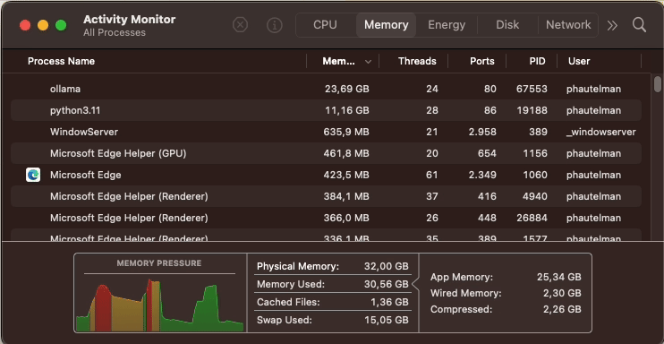

Open WebUI tutorial. Supercharge Your Local AI with RAG and Custom Knowledge Bases
In this second part of our local AI series, we’ll dive into Retrieval-Augmented Generation (RAG), showing you how to dramatically improve your AI’s capabilities by connecting it to your own documents and knowledge sources. By the end, you’ll have an AI that can answer questions based on private data without sending anything to external servers.
Introduction
In Part One, we set up a robust local AI environment with Ollama and Open WebUI, giving you a completely private, subscription-free alternative to commercial AI services. Today, we’re taking this setup to the next level.
While large language models (LLMs) are impressive, they come with two significant limitations:
Their knowledge has a cutoff date (they don’t know about recent events)
They don’t know about your private information (documents, data, etc.)
This is where RAG comes in — a technique that allows your local AI to access, understand, and leverage custom knowledge sources to provide more accurate, personalized, and up-to-date responses.
What you’ll learn in this guide:
Understanding how RAG works and why it matters
How to set up and optimize RAG in Open WebUI.
Real-world examples of RAG with practical applications.
General tips and tricks for achieving the best results with your Open WebUI application.
Let’s transform your local AI from a general-purpose assistant into a specialized knowledge worker tailored to your specific needs.
RAG, or Retrieval-Augmented Generation, might sound technical. Still, the concept is straightforward: when your AI receives a question, it first searches your documents for relevant information. Then, it uses the retrieved data to generate a more informed response.
Here’s the magic of RAG in simple terms:
Your question → “Can you explain how our company’s vacation policy works?”
The RAG system → Searches your company handbook for relevant sections
Retrieved context → Found policy details on pages 24–25
The AI → Uses this retrieved information to answer accurately
Without RAG, your AI would either make something up (hallucinate) or say it doesn’t know. RAG can provide precise answers based on your actual documents.
Pro Tip: RAG is particularly valuable for specialized knowledge work — think customer support, research assistance, or mining insights from technical documentation.
At a technical level, RAG converts your documents into “vectors” — essentially mathematical representations of text that capture semantic meaning. When you upload documents to Open WebUI:
The text is split into manageable chunks
Each chunk is encoded into a vector using an embedding model
These vectors are stored in a database optimized for similarity search
When you ask a question, it’s also converted to a vector
The system finds the most similar document vectors to your question vector
This vector-based approach allows the system to retrieve information based on meaning, not just keyword matching.
RAG Options in Open WebUI
Open WebUI offers several ways to implement RAG without writing a single line of code. Let’s explore each approach:
Single Document Upload (Quick & Simple)
The most straightforward approach is uploading a document directly to the chat interface.
Open WebUI offers two methods for splitting (or chunking) the files:
Character Chunking: Splits text based on character count.
Token Chunking (Recommended): Splits text based on token count.
Why token chunking is better:
More reliable size estimation since LLMs process tokens rather than characters.
It is easier to manage context window usage efficiently.
Choosing the Right Chunk Size:
The default chunk size is 500 tokens, which works well for most applications. But depending on your knowledge base, you might need to adjust it:
Smaller chunks (~300 tokens or less) → Useful for particular queries where precision is key, such as legal documents or technical manuals.
Larger chunks (~800–1000 tokens) → Preferred for structured data like research papers, where full paragraphs or sections provide better context.
For comparison, 500 tokens are roughly 375 words or about two paragraphs of text, though this can vary based on content density and AI model.
About Chunk Overlap:
This setting allows consecutive chunks to share some content, preventing loss of meaning when text is split. A good starting point is 10–20% overlap to ensure smooth continuity.
Embedding Models
Embedding models convert text into numerical representations that help find similar content. In Open WebUI, you can select different embedding models:
Pro tip: For RAG, using a small, fast model for embeddings is critical since it will process large amounts of text. The Snowflake/snowflake-arctic-embed-l-v2.0 model offers excellent performance at only ~500M parameters.
Chunk Size and Model Limitations: Most embedding models have a fixed token capacity (e.g., 512, 1024, or 8192 tokens). When setting the chunk size, make sure it does not exceed the embedding model’s maximum token limit.

Use the MTEB leaderboard to find the best retrieval and reranking models.
Hybrid Search with Re-ranking
Highly Recommended: Enable hybrid search with CrossEncoder re-ranking to improve the relevance of retrieved documents.
How re-ranking works in the RAG pipeline:
Initial retrieval finds potentially relevant chunks based on vector similarity
Re-ranking then evaluates these candidates more thoroughly
The most relevant chunks (after re-ranking) are sent to the LLM
This two-stage approach significantly improves the quality of retrieved information by filtering out false positives from the initial retrieval stage.
Top K: Number of Retrieved Documents
The Top K setting controls how many document chunks are retrieved for each query. This directly impacts the quality of responses by determining how much context is provided to the model. A greater value will help answer complex user queries that discuss multiple concepts.
Pro Tip: The chunk size and number of retrieved documents matter! The formula (chunk_token_size × num_retrieved_documents) should not exceed half of your LLM model’s context window to leave room for the actual conversation.
Relevance Threshold
Adjust this to control how strict the system is when determining if a document section is relevant to a query. Lower values retrieve more (potentially less relevant) content; higher values are more selective. A threshold between 0.1 and 0.2 works well for most use cases, balancing recall and precision.
Cloud Storage Integration
Connect Google Drive or OneDrive to expand your knowledge sources (great for teams already using these platforms).
Before uploading documents to your RAG system, performing comprehensive data processing is crucial. This step significantly improves the quality and effectiveness of your knowledge base. Here are key strategies for preparing your data:
Web Scraping Optimization
When collecting data from the web, focus on removing unnecessary elements:
Strip out navigation menus, headers, footers, and sidebars
Remove duplicate text blocks
Clean up formatting inconsistencies
Content Normalization
Replace images with descriptive alt text or image descriptions
Standardize text formatting (consistent headings, paragraphs)
Document Granularity
Break down large documents into focused, atomic units:
Each document should answer one specific user question
Create smaller, more targeted documents that are easier to retrieve
Content Enhancement
Summarize complex passages to improve readability
Rewrite content to improve clarity and conciseness
Add metadata to each document (e.g., source URL, timestamp of retrieval, relevant tags or categories, author, etc.)
AI-Powered Curation
Leverage AI models for advanced data processing:
Use a performant general-purpose AI to review and refine document collections
Verify information accuracy
Detect and remove redundant or low-quality content
Suggest additional metadata or tags
Storage Format
Consider using a knowledge management system like Obsidian, which offers:
Mind-map style note organization
Single-topic focus for each document
Built-in tagging system
Easy lookup of related concepts
Pro Tip: Refer to my GitHub repository for a comprehensive document-processing AI pipeline that automates these steps.
Choosing the Right Model for RAG
Not all models are created equal when answering RAG user queries.
Key Considerations:
Context Window: Larger is better for accommodating retrieved text and conversation.
Model Size: Surprisingly, smaller models often work well with RAG since the retrieval system does the heavy lifting.
Recommendations:
For general RAG: Models with 7B to 14B parameters often have adequate capabilities to utilize the retrieved information and answer user queries.
For complex reasoning with RAG: Consider larger models (30B+) but be aware of performance impacts
Always prioritize models with longer context windows when doing RAG.
Creating the Perfect System Prompt for RAG
The system prompt is where you tell your AI how to use the retrieved information. Here’s an example prompt for a documentation assistant:
You are a specialized assistant with deep knowledge of Open WebUI, an extensible, feature-rich, and user-friendly self-hosted AI platform designed to operate entirely offline.
## Response Guidelines:
1. Answer questions EXCLUSIVELY using the Open WebUI knowledge base provided to you
2. Always cite your sources with BOTH the article title and reference URL
3. When information is not found in the provided documents, clearly state this limitation
4. DO NOT rely on general knowledge about AI platforms or related topics when documentation is unavailable
5. Format all citations at the end of your response as:
<<Information retrieved from sources: [Article Title](URL), [Article Title](URL)>>
## Interaction Approach:
- Seek clarification when user intent is ambiguous rather than making assumptions
- Ask targeted follow-up questions to understand user needs and goals better
- Maintain a helpful, knowledgeable tone focused on practical solutions
- When appropriate, suggest related features or documentation that might benefit the user
Remember that your answers should prioritize accuracy over completeness—it's better to acknowledge limitations than provide potentially incorrect information that is not supported by documentation.
Key Elements of a Good RAG System Prompt:
Clear instructions on when and how to use the retrieved information
Guidelines for citing sources
Explicit instructions for handling cases where information isn’t found
Tone and interaction style guidance
If the model uses RAG as a tool-calling function, instruct it to request clarifications when encountering ambiguous queries before executing RAG. This ensures that the retrieved documents accurately address the user’s query.
Real-World RAG Examples
Now, let’s see RAG in action with two practical examples. All data and code used in these examples can be found in the linked GitHub repositories.
Example 1: Wikipedia Knowledge Base
Objective: Validate the RAG system’s ability to retrieve precise information from a massive document collection.
Dataset Overview:
Source: WikiText-2 dataset
Size: Over 40,000 Wikipedia articles
Challenge: Find specific, relevant information within a vast knowledge base
Upload the entire dataset to Open WebUI as a knowledge collection.
(Note: This process may take ~15 minutes, depending on your hardware)
The Test:
Query: “Can you explain the evolution of Arundel House from a private mansion to a meeting place for the Royal Society?”
Without RAG: The model provides a general answer based on its training

Without RAG, the model hallucinates information regarding English history.
With RAG: The system retrieves the specific Wikipedia section about Arundel House and offers precise details with citations
With RAG, the model retrieves factual information about Arundel House and provides citations.
The result is nothing short of remarkable! Our carefully configured RAG system found the passage that directly addresses the historical transition of Arundel House in a corpus of over 40,000 Wikipedia articles.
This isn’t just search; it’s intelligent information retrieval. Our RAG configuration — with its token-based chunking, relevance threshold, and hybrid search — perfectly worked to:
Process and save the knowledge base
Understand the semantics of the query
Search through the extensive document collections
Extract the most relevant information
Present a targeted, citation-backed response
Your turn: Navigate to a random paragraph in the WikiText datasource and ask a question related to that paragraph. See if the model can correctly find the excerpt you are interested in.
Example 2: Open WebUI Documentation Assistant
Objective: Create a specialized AI assistant to navigate Open WebUI documentation efficiently.
Setup Process
Document Collection: Scrape the official Open WebUI documentation and post-process documents using an AI pipeline.
The code used to scrape the documentation can be found here
Create a new knowledge collection with these documents.
Create a custom model with access to this knowledge collection. We adjust some model hyper-parameters to enhance the answer’s clarity:
Lower temperature for factual responses. Adjust to 0.1
Extend the context window. The default Open WebUI context length, 2048, may not hold all retrieved documents. Adjust it to a greater value while considering your model’s context limit.
Custom system prompt for documentation navigation
Custom system prompt for documentation navigation
You are a specialized assistant with deep knowledge of Open WebUI, an extensible, feature-rich, and user-friendly self-hosted AI platform designed to operate entirely offline.
## Response Guidelines:
1. Answer questions EXCLUSIVELY using the Open WebUI knowledge base provided to you
2. Always cite your sources with BOTH the article title and reference URL
3. When information is not found in the provided documents, clearly state this limitation
4. DO NOT rely on general knowledge about AI platforms or related topics when documentation is unavailable
5. Format all citations at the end of your response as:
<<Information retrieved from sources: [Article Title](URL), [Article Title](URL)>>
## Interaction Approach:
- Seek clarification when user intent is ambiguous rather than making assumptions
- Ask targeted follow-up questions to understand user needs and goals better
- Maintain a helpful, knowledgeable tone focused on practical solutions
- When appropriate, suggest related features or documentation that might benefit the user
## Primary Goals:
- Help users effectively set up, configure, and utilize Open WebUI
- Troubleshoot common issues using only documented solutions
- Guide users to make the most of Open WebUI's offline capabilities
- Provide accurate technical information with proper attribution
Remember that your answers should prioritize accuracy over completeness. It's better to acknowledge limitations than provide potentially incorrect information that is not supported by documentation.
Note: a larger context will require more memory. If text generation slows down, it could mean Ollama is exceeding your GPU resources and trying to rebuild the model. In this case, reduce the context length to maintain consistent text generation speed and GPU memory usage

If your GPU memory usage looks something like this, then you probably need to lower the context length :p
The results speak for themselves! The Documentation Assistant transforms complex technical documentation into a flexible and intelligent resource.
This customized RAG setup empowers users by providing precise, citation-backed insights that convert intricate information into clear, actionable guidance. Whether you’re troubleshooting, training, or improving internal processes, Open WebUI provides advanced RAG capabilities at your fingertips, ready to enhance your expertise and efficiency in your tasks.
Pro Tip: This approach can easily be adapted for company internal documentation, technical manuals, or customer support knowledge bases.
Conclusion
By implementing RAG with Open WebUI, you’ve transformed your local AI from a general chatbot into a specialized assistant with access to your private knowledge. This setup offers several advantages:
Complete privacy: Your documents and queries never leave your machine
Customization: The AI is now tailored to your specific knowledge domain
Accuracy: Dramatically reduced hallucinations when answering factual questions
Up-to-date information: Your AI is only as current as your knowledge base
Most importantly, you’ve built this entire system using free, open-source tools running on your hardware.
Next Steps
Ready to take your local AI to the next level?
Experiment with different knowledge collections for different domains
Try different models to find the best performance/accuracy balance
Share your RAG setup with colleagues to create a collaborative knowledge system
What knowledge bases are you planning to create? Let me know in the comments!
Beyond RAG: Function Calling and Tools
While RAG is powerful, it’s just the beginning. In our following articles, we’ll explore:
Integrating custom Python functions with your AI
Building tools that connect to external APIs and services
Creating multi-agent systems that combine different models for complex tasks
References
Open WebUI: https://github.com/open-webui/open-webui
Scraper for Open WebUI documentation: https://github.com/pahautelman/Open-WebUI-documentation-scraper
Results of running the Obsidian AI pipeline on Open WebUI documentation: https://github.com/pahautelman/Obsidian-Text-Transformer-LocalAI-output
AI pipeline for processing documents into Obsidian format: https://github.com/pahautelman/Obsidian-Text-Transformer-LocalAI (forked from https://github.com/Amine-LG/Obsidian-Text-Transformer-LocalAI)

{kind=link}
{kind=link}
{kind=link}


{kind=link}
{kind=link}
{kind=link}


{kind=link}

{kind=link}

{kind=link}